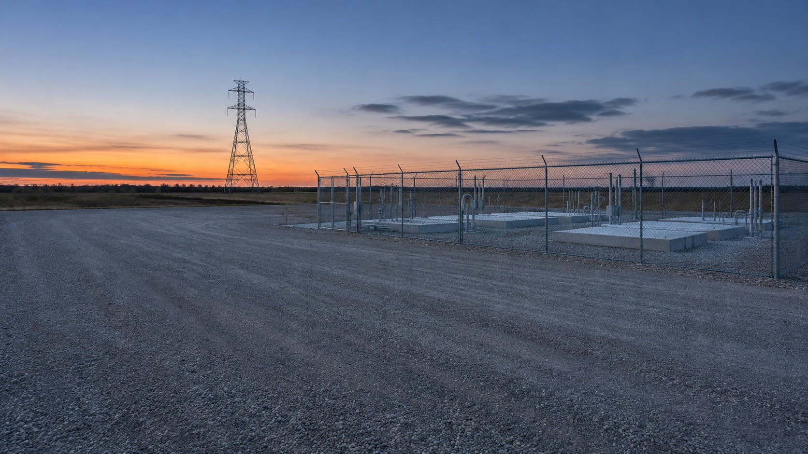
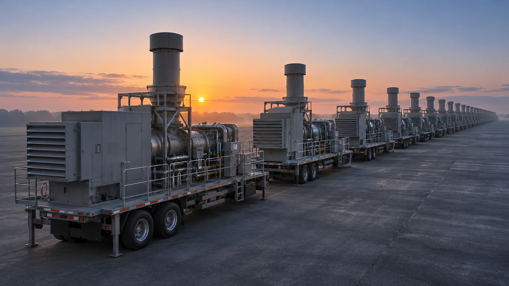

The Aegis Orbital Compute Node is a one-megawatt data hall in a 650 km orbit. Its page carries a table that sets the node against a terrestrial hall, and the node loses at every launch price on offer today. This note does not argue with that table. It argues that the table answers a narrower question than the one buyers now face.
01What the comparison says
Both halls buy the same accelerators. What differs is the plant around them. On the ground that is $10 to $15 million a megawatt to build and under a million a year in power. In orbit it is 86 t of launch mass, and the two meet at about $230 a kilogram to sun-synchronous orbit. That price does not exist. At $500 a kilogram the node costs about twice what the hall does.
The table is also kind to the node. It prices the launch and not the array, battery, radiators and structure that are launched. Nobody has built a megawatt of spacecraft at ground prices. At the price per kilogram of the cheapest satellites flown, by outside estimates, that hardware is another $46 to $100 million a megawatt, and no launch price brings the node level with a hall. So on cost alone the ground wins, and it is not close.
02What the wait costs
The comparison takes the terrestrial megawatt as available on the day it is wanted. Berkeley Lab’s count of the grid queue puts the median power plant built in 2025 at more than five years from request to operation. For the data centers on the other side of the meter, JLL’s 2026 outlook is reported as more than four years on average to a grid connection in the main US markets, and about seven in Northern Virginia.
A megawatt of accelerators that is running earns its operator roughly $8 to $11 million a year in revenue, on current filings and analyst estimates. Four years of waiting is $32 to $44 million of revenue that is not earned, two to four times what the hall costs to build. That is revenue and not profit, and the chips are the larger bill. But it is the right size of number to set beside the node’s premium, and the usual comparison sets it at zero.

03Three ways to a megawatt on the ground
Buyers already know this, and they already pay to shorten the wait. There are three routes.
- Wait for the grid. Four years and up, as above. Some pay to bring supply with them: analysts put the price of power from one restarted nuclear unit at $98 to $115 a megawatt-hour over twenty years, about twice the market price beside it. The contract price was not disclosed.
- Bring a turbine. On-site gas is estimated at $100 to $165 a megawatt-hour against $90 to $95 from the grid. But the turbines are queued too. One of the three large makers reported 122 GW of orders and reserved slots in October 2026 against about 20 GW a year of output, which is five to six years of production. A new combined-cycle plant cost 66 % more in 2025 than in 2023.
- Run ahead of the permit. The fastest build on record was reported running 122 days after its owner chose to supply its own power from trailer-mounted turbines. A Clean Air Act suit filed in April 2026 alleges 27 such turbines at a sister site ran without an air permit. In October a federal judge declined to dismiss it and rejected the argument that the turbines were exempt as mobile sources. Nothing has been found against the operator, and the case is open.
The premium on power is small. Fifty dollars more a megawatt-hour is about $0.4 million a megawatt-year, a few percent of what the megawatt earns. Buyers pay it without much argument, which says the wait is what they are pricing and not the power.

04The slope
Some of the wait will shorten. Grid operators are moving to study connection requests in batches, utilities are writing tariffs that make large loads pay for what they need, the turbine makers are adding output, and each generation of chips does more with a megawatt. These help the queue. They do not help the neighbours. Data Center Watch counted $64 billion of US projects blocked or delayed by local opposition from 2023 to early 2025, and about 120 projects worth $198 billion in the first half of 2026 alone, with more than 800 opposition groups in 49 states. Those totals mix blocked with delayed, and some of the delayed will be built. The objections are often reasonable. A hall draws the power of a town, may draw its water, and employs few people once it is built. The people asked to live beside one are entitled to say no, and more of them are.
That gives the ground a cost per site that rises. Each new site is a new negotiation over land, power, water and a permit, with a different utility and a different county, and the sites with spare capacity and willing neighbours go first. Supply may catch up with the queue in the 2030s. No amount of building catches up with a county that has said no.
A node’s cost falls with each one built. The second node is the first node again, from the same line, on the same launch vehicle, into the same orbit, and it needs nothing from the ground that the first did not. A single-site comparison cannot show this, because it compares two points and the difference is in the slopes.
05What orbit does not escape
Orbit has its own permissions. A node needs a spectrum licence, an approved plan for its end of life, and a place on a launch manifest. These are queues too. They are fewer, they are set nationally and not county by county, and they do not multiply with each node. But they are real, and orbit has neighbours of its own: every object placed there is one more to track and to steer clear of. That is an argument for a megawatt in one node and not in dozens of small satellites, which the AOCN page sets out.
A fleet has ceilings of its own. A gigawatt is a thousand nodes, 86,000 t. At a hundred tonnes a launch, which no vehicle yet delivers to that orbit, it is about 860 launches, and the ground adds gigawatts every year. The orbit is finite too. The 650 km ring is 44,100 km around, so a thousand nodes fly 44 km apart, and a hundred thousand would fly 440 m apart, which is not a spacing anyone would license. Past a few gigawatts a fleet needs other altitudes, each with its own shadow and its own radiation. Orbit is a route for the megawatts that cannot be sited. It does not replace the ground.
Nor is the first node fast. It is 86 t, it needs heavy lift at a price that is not yet offered, and it has to be assembled or unfolded in orbit by means nobody has demonstrated at that size. The argument here is about the tenth node and the hundredth, not about beating a turbine to next summer.
Aegis is a design shop and does not build nodes. What it can do is state the trade plainly. Orbital compute is not a cheaper megawatt. It is a megawatt that can be ordered again, and again, without asking anyone new. Whether that is worth the premium depends on what the wait costs the buyer, and the buyers have begun to say what it costs them.
Sources
- Node mass, launch table and break-even: the AOCN page. Hardware at satellite prices: the AOCN model’s hardware cost line, on outside estimates of $650 to $1,400 a kilogram. None is a quotation.
- Grid queue: Lawrence Berkeley National Laboratory, Queued Up, 2026 edition. Data center connection times: JLL 2026 Global Data Center Outlook, as reported.
- Revenue per megawatt: operator filings and analyst estimates for GPU cloud providers, mid-2026, as reported. Multi-year contracts are reported higher.
- Nuclear restart price: Jefferies and Morgan Stanley estimates, via Utility Dive.
- On-site gas cost: RaboResearch. Turbine backlog: GE Vernova, third quarter 2026. Plant cost: BloombergNEF, via Bloomberg.
- Turbine suit and ruling: Earthjustice; CNBC.
- Local opposition: Data Center Watch; first half of 2026 via Statista.